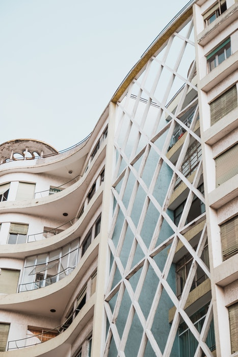
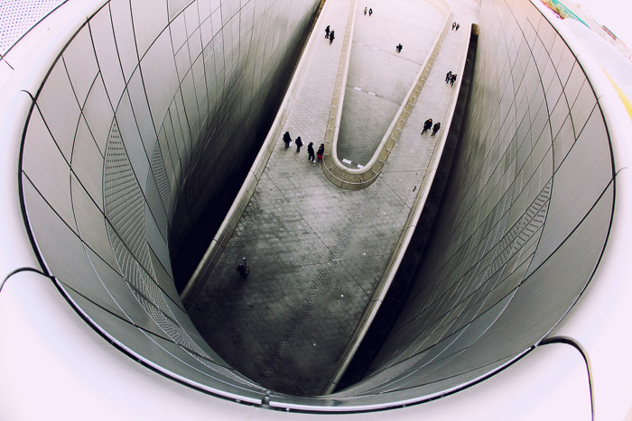
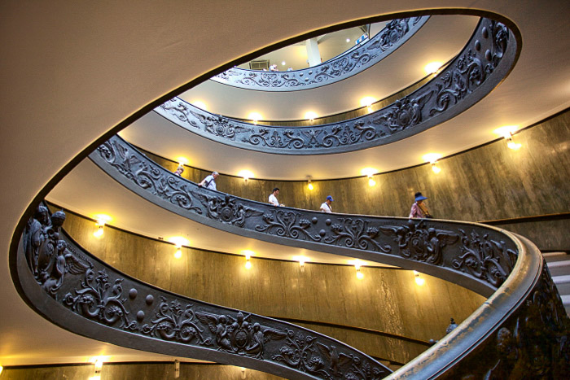
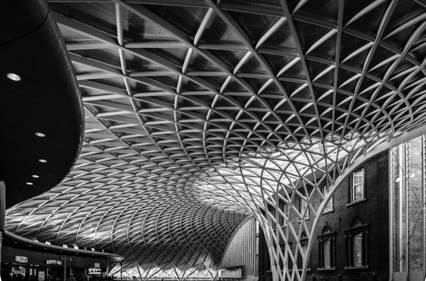

rchitecture photography is all about buildings, monuments, interiors, and exteriors. The images can be taken for the purposes of art. Or to document the aesthetic of a structure.

Architecture photography is a lot less dynamic than other photography fields. Especially compared to photojournalism or sports photography.
You spend a considerable amount of time mulling over a scene or environment.
This means your camera doesn’t need to focus on speed. Or continuous shooting modes, for example.
You need to focus on quality. Use a low ISO, capture your images in Raw and utilize editing tools. With these, you are halfway to capturing stunning images.
In architecture photography, you need to focus on composition rules a lot. A building can look stunning but if you don’t know how to fit it in your frame, it might look average in photos.
A few lenses in your camera gear will allow you versatility. You can photograph a multitude of different structures and scenarios.
Some photographers use specialized equipment. A large-format camera helps to minimalize parallax errors. These are often found in angled images of structures.
Other equipment, such as tilt and shift lenses also add a creative touch to your shots.
Great architecture images are photographed using many different cameras.
Large format was the standard for architecture photography as it provided high-quality images. They also helped keep a strong perspective control.
Nowadays, using your iPhone could result in powerful architecture and interior photography.
The quality of DSLRs and mirrorless systems allow you to capture amazing images. You don’t even need a top-of-the-range camera.
One thing you do need to consider is being able to change lenses. This is important for the many different scenes you will come across.
Lenses in architectural photography allow you to capture structures in dynamic ways. Some, such as prime lenses will give you very sharp images, and less distortion.
Yet, to photograph a closer scene means you will need to move closer to the subject. Zoom lenses allow you to capture a wider or closer frame without moving.
But their sharpness can diminish at different focal lengths. Tilt-and-shift lenses are something you need to consider. They help to eliminate perspective distortion.
Architectural photography allows you to take a little more time photographing your subject. Your structure isn’t going to move anytime soon. Yet, you can use this extra time for scouting the best camera placement.
This field is a little more tricky when it comes to composition and perspective. Aim for straight lines and a clean and powerful frame.
The keyword here is quality. There are many different subjects you can photograph. All imploring you to use your creativity.
Architecture is great because the structures look very different in the day and in the night. Their meaning and mood changes.
The same goes for weather conditions. A winter scene of the Eiffel Tower will differ from the same image shot in spring.
Use this to your advantage and show the structure off in different scenarios. Find your structure, and visit it many times.
This way, you get to see how the different levels and angles of light affect it. There are many different ways you can photograph the same building.
